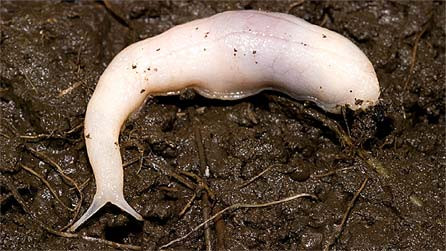
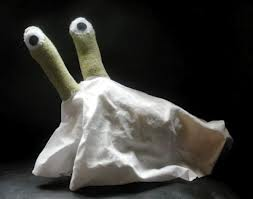
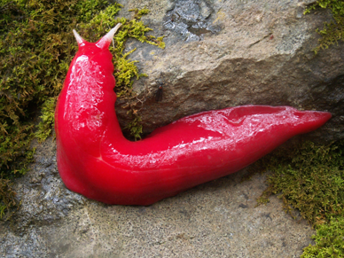
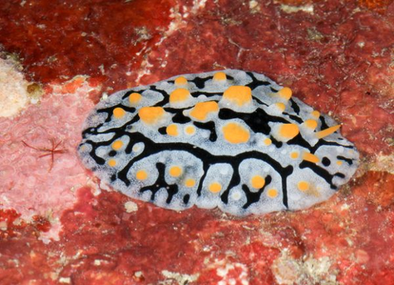
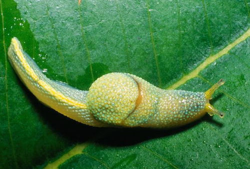
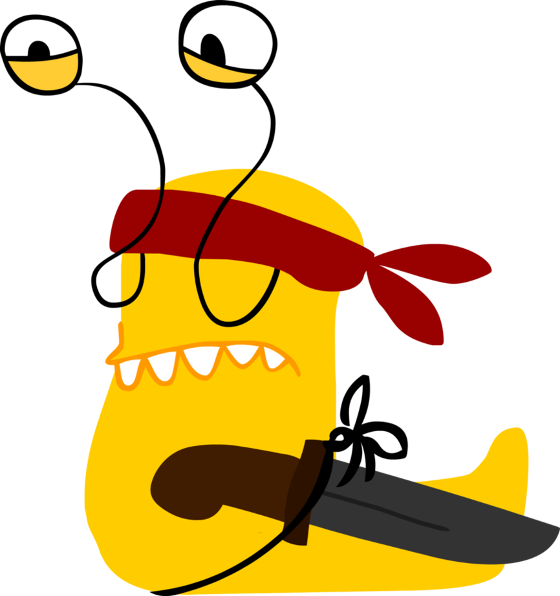

Background
The origin of my slug relations are purely based around the comment by Dan Novak in this article (note that the link is to a cached version purely to minimise the publicity of the page itself - the Soton Tab is, in my opinion, largely awful journalism, and hence shouldn't be publicised). This has now led to many joke names for myself, mostly used in the MathIM (Instant Message) lobby.
Slug Gallery
Below is a gallery of some of the most amazing slugs.
The ghost slug is a predatory slug using its "blade-like" teeth to eat earthworms. It looks like this:
They do not look like this:
The Pink slug, unsurprisingly, is very pink:
The pancake slug is also rather magnificent:
Also, the pretty awesome ninja slug:
Another ninja slug:
